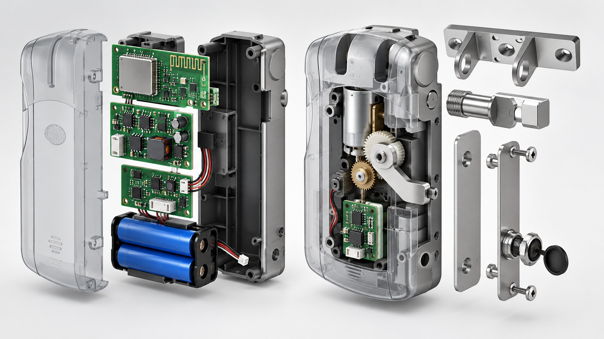
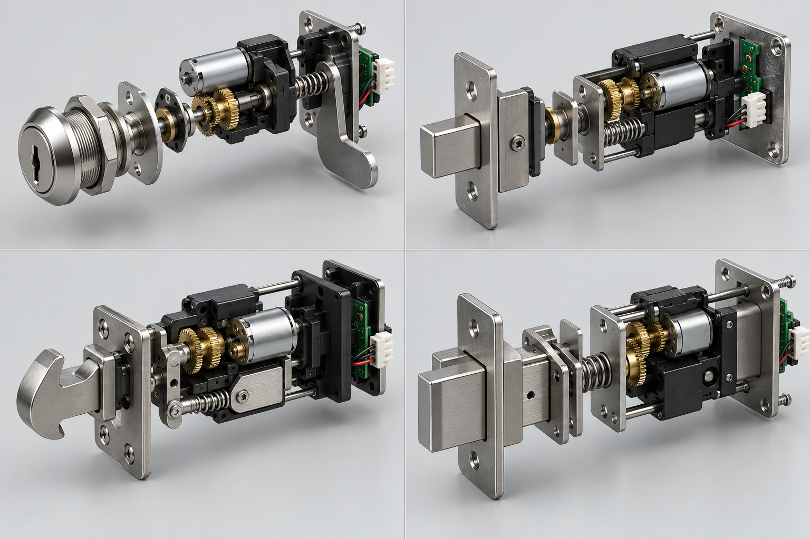

本文是工程可行性分析，不是新品发布。WAFU 当前没有把 WF-010 或 WF-019 作为标准电子柜锁销售；最终适配性必须通过柜体图纸、专用样机和书面规格确认。
WF-010 和 WF-019 已具备隐蔽安装、电池供电、无线控制和电机执行等基础能力，因此可以成为柜锁定制项目的讨论起点。但柜门会改变安装包络、锁舌结构、维护空间和无线环境。正确的问题不是“现有门锁能否直接装到柜子上”，而是“哪些模块可以复用，哪些必须重做”。
1. 先划清“可复用平台”与“现成柜锁”的边界
门锁围绕门扇、门框和扣盒工作；柜锁可能安装在薄金属板、双层柜门或狭窄内腔中，并使用旋转凸轮、短锁舌或弹性锁扣。同样是“隐藏安装”，机械条件完全不同。
WF-010 和 WF-019 可作为无线控制、低功耗、电机驱动和制造经验的基础，但现有外壳、锁扣、电池仓不能直接视为已经通过柜门验证。
2. 对比安装包络和受力路径
首先确认柜板厚度、门内净空、折边、铰链间隙、开启方向和扣件位置。薄板往往需要加强板，双层柜门则可能阻挡螺钉、换电和应急解锁。
门锁通常把锁舌推入固定门框；柜锁可能旋转凸轮或推动短锁舌。行程、力臂、回差和柜体变形下的阻力都需要在目标柜体上测量。

3. 判断哪些电子与控制能力可以复用
较有复用价值的是低功耗 RF 经验、遥控配对逻辑、电机驱动思路、电量监测、告警策略和生产测试方法。它们属于工程能力，并不代表现有 PCB 或固件可以原样移植。
柜锁项目仍需重新核对控制板尺寸、天线位置、接插件方向、电机电流、休眠功耗、权限逻辑和应急供电。更小的空间也可能迫使 PCB 外形和电池方案改变。
4. 重新设计柜门专用机械系统
柜门版本需要专用凸轮或短锁舌、安装板、扣件、防松结构和维护路径。合格设计应限制凸轮过转，保证锁舌在柜板变形时仍能对齐，并避免用户推拉柜门时持续给电机加载。
外壳厚度、螺钉操作和电池更换必须一起评估。若换电需要拆除层板或内部设备，即使锁体很小，也不属于可维护的柜锁方案。

5. 按柜体类型限定适用范围
办公文件柜、储物柜、快递柜、电气柜、展示柜和工业机柜的频次与风险边界不同。金属柜影响信号，公共储物柜需要更强的防误用能力，电气柜还涉及隔离、环境和权限要求。
首个项目应只选择一种柜体和一种运行工况。轻型办公柜验证通过，不能自动延伸为户外、工业或高安防柜体的适用声明。

6. 建立柜锁专用样机放行门槛
样机必须完成尺寸图核对、实柜安装、闭门信号、低电量、堵转、应急开启和循环测试，并记录卡滞、电池耗尽、遥控器丢失或控制器复位后的处理方式。
放行记录应冻结柜板、扣件、锁体、PCB、固件和电池配置；这些项目中的任何变更都应重新做兼容性与样机验证。
7. 结论：适合作为开发起点，不适合直接替代
WF-010 和 WF-019 具备隐藏机械、电池供电和无线控制经验，可以支持定制电子柜锁的前期评估。但柜门机构、安装、维护和射频仍属于独立 OEM/ODM 工程。
在选择基础平台或投入模具前，应先提供柜体图纸、材料、内部净空、所需开锁方式、数量和目标市场。
项目咨询与 OEM/ODM
请提供柜体图纸、板材、数量和无线需求，以便确定可验证的样机开发路径。